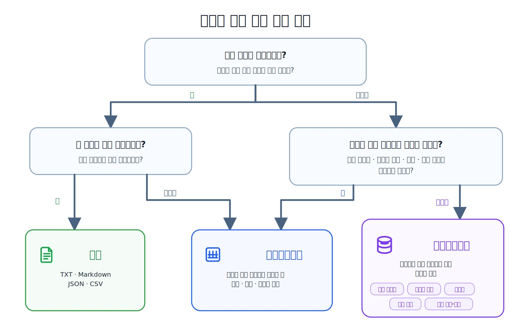
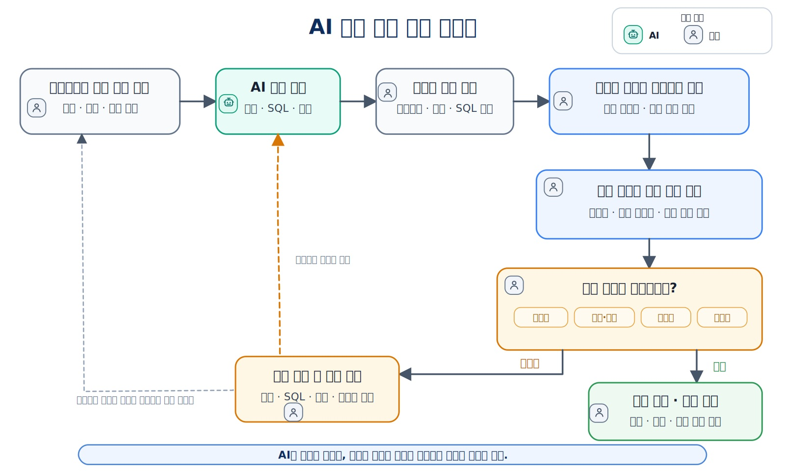

AI 시대에 데이터베이스를 왜 배워야 하는가
AI가 SQL과 데이터베이스 코드의 초안을 빠르게 만들 수 있는 시대입니다. 그래서 더 중요한 것은 문법을 많이 외우는 일이 아니라 데이터의 의미와 관계를 이해하고, 실행 결과가 실제 요구사항과 맞는지 검증하는 능력입니다.
사람은 무엇을 이해하고 무엇을 검증해야 하는가?
이 장을 시작하기 전에
이 장은 데이터베이스를 처음 배우는 독자를 대상으로 합니다. 프로그래밍이나 SQL을 사용해 본 경험이 없어도 읽을 수 있습니다.
이 장에 나오는 SQL은 문법을 암기하거나 바로 실행하기 위한 코드가 아닙니다. AI가 만든 SQL이 왜 실행되더라도 잘못된 결과를 만들 수 있는지 이해하기 위한 축약 예제입니다. 실제 PostgreSQL 환경은 Chapter 03에서 준비하고, 테이블 생성과 기본 SQL 실습은 Chapter 04에서 시작합니다.
이 장에서 살펴볼 내용
ChatGPT와 Codex 같은 AI 도구는 요구사항을 정리하고 테이블 구조와 SQL 초안을 만드는 작업을 지원할 수 있습니다. 그렇다면 데이터베이스를 직접 배울 필요가 줄어든 것일까요?
데이터베이스 지식의 필요성이 사라진 것은 아닙니다. AI가 만드는 설계와 SQL 초안이 많아질수록 사람은 데이터의 의미와 관계를 이해하고, 생성된 구조와 숫자가 실제 요구사항에 맞는지 판단해야 합니다. SQL이 오류 없이 실행된다는 사실만으로 결과가 올바르다고 볼 수 없으며, 테이블이 만들어졌다는 사실만으로 오래 사용할 수 있는 구조라고 판단할 수도 없습니다.
이 장에서는 다음 내용을 살펴봅니다.
- AI가 SQL을 만들어 주어도 데이터베이스를 배워야 하는 이유
- 실행되는 SQL과 요구사항에 맞는 SQL의 차이
- 잘못된 데이터와 조회 기준이 결과에 미치는 영향
- 현실의 업무를 데이터와 관계로 표현하는 방법
- 파일·스프레드시트·DBMS 중심 관리 방식을 선택하는 기준
- 기준 데이터, 파생 데이터와 AI 생성 결과의 차이
- AI가 도울 수 있는 일과 사람이 확인해야 할 일
이 장을 마치면
다음 내용을 자신의 말로 설명할 수 있습니다.
- AI가 SQL을 만들어도 데이터베이스 지식이 필요한 이유
- 실행 성공과 결과 정확성이 서로 다른 이유
- 파일·스프레드시트·DBMS 중 적절한 방식을 선택하는 기준
- AI가 만든 데이터 구조와 SQL에서 사람이 확인해야 할 항목
이 책 전체의 학습 표시와 실습 방법은 앞의 Overview에서 설명했습니다.
이 장의 핵심 질문은 다음과 같습니다.
AI가 SQL과 데이터베이스 코드를 작성해 준다면,
사람은 무엇을 이해하고 무엇을 검증해야 하는가?
미리 보는 용어
이 장에는
JOIN,NULL, 기본키, 외래키, 제약조건, 트랜잭션과 인덱스 같은 용어가 등장합니다. 지금은 모두 암기하지 않아도 됩니다.
JOIN: 서로 관련된 여러 테이블의 행을 연결해 조회하는 방법NULL: 값이 없거나 아직 입력되지 않았음을 나타내는 상태- 기본키와 외래키: 행을 구분하고 참조 관계를 표현하는 키
- 제약조건: 잘못된 값이나 관계가 저장되지 않도록 적용하는 규칙
- 트랜잭션: 여러 데이터 변경을 하나의 작업 단위로 처리하는 방법
- 인덱스: 데이터를 더 효율적으로 찾기 위해 사용하는 구조
각 개념은 이후 장에서 PostgreSQL 실습과 함께 단계적으로 살펴봅니다.
1. AI가 SQL을 만들어 주는데도 DB를 배워야 할까
AI에게 다음과 같이 요청하면 SQL 초안을 빠르게 받을 수 있습니다.
학생 정보를 저장할 PostgreSQL 테이블을 만들어 주세요.
학생별 질문 수를 계산하는 SQL도 작성해 주세요.
AI는 테이블 생성문과 조회문을 빠르게 제안할 수 있습니다. 문법 오류를 설명하고 코드도 수정해 줍니다. 그러나 AI가 다음 내용을 항상 정확하게 아는 것은 아닙니다.
학생 이메일은 중복될 수 있는가?
탈퇴한 학생 기록을 삭제해야 하는가?
질문이 없는 학생도 통계에 포함해야 하는가?
완료 상태의 질문에는 반드시 답변이 있어야 하는가?
어떤 정보가 개인정보이며 누가 조회할 수 있는가?
이 질문은 SQL 문법이 아니라 업무 규칙과 데이터 정책의 문제입니다. AI는 가능한 초안을 제안할 수 있지만 요구사항을 최종적으로 결정하고 결과를 책임지는 주체는 사람입니다.
따라서 AI 시대의 데이터베이스 학습은 모든 SQL 문장을 외우는 과정이 아닙니다. 다음 능력을 기르는 과정입니다.
무엇을 저장해야 하는지 판단한다.
데이터가 어떻게 연결되는지 이해한다.
AI가 만든 구조와 SQL의 위험을 발견한다.
실행 결과가 실제 요구사항과 맞는지 검증한다.
2. 데이터베이스를 배워야 하는 다섯 가지 이유
데이터베이스를 배우는 이유는 다음 다섯 가지로 정리할 수 있습니다.
| 이유 | 확인해야 할 핵심 질문 |
|---|---|
| AI가 만든 결과 검증 | 이 SQL과 숫자가 실제 요구사항에 맞는가? |
| 현실의 업무 구조 표현 | 사용자, 주문, 강의와 신청 같은 대상은 어떻게 연결되는가? |
| 정확한 분석과 의사결정 | 중복·누락·NULL과 집계 기준이 올바른가? |
| 서비스의 지속적인 운영 | 사용자, 업무 상태와 결과를 어떻게 안정적으로 관리하는가? |
| 안전성·이력·복구 확보 | 잘못된 변경을 막고 원인을 추적하며 복구할 수 있는가? |
AI 결과 검증
+ 업무 구조 표현
+ 정확한 분석
+ 서비스 운영
+ 안전성과 복구
AI 기능을 서비스에 통합하면 사용자, 요청, 상태와 결과 같은 정보를 지속적으로 관리해야 하는 경우가 많습니다. 데이터베이스는 이러한 정보를 구조적으로 저장하고 연결하는 기반이 될 수 있습니다.
이 다섯 가지 관점은 이후 장의 설계, SQL, 트랜잭션, 인덱스, 보안, 분석과 AI 검증을 연결하는 기준이 됩니다.
3. 실행되는 SQL과 올바른 SQL은 다르다
다음 질문을 생각해 보겠습니다.
전체 학생 수를 계산해 주세요.
질문을 한 번도 작성하지 않은 학생도 포함해야 합니다.
AI가 다음 SQL을 제안했다고 가정하겠습니다.
SELECT COUNT(*) AS student_count
FROM students AS s
INNER JOIN questions AS q
ON q.student_id = s.id;
지금은 JOIN 문법을 외울 필요가 없습니다. 이 예제에서는 SQL이 실행되는 것과 질문의 의미에 맞는 결과가 나오는 것이 별개의 문제라는 점만 확인합니다. JOIN은 Chapter 08에서 자세히 다룹니다.
이 SQL은 문법적으로 실행될 수 있습니다. 그러나 INNER JOIN은 양쪽 테이블에서 연결되는 행만 남기므로 질문이 없는 학생은 제외됩니다. 한 학생이 질문을 여러 개 작성했다면 그 학생도 질문 수만큼 반복됩니다.
작은 데이터를 예로 살펴보겠습니다.
| 학생 | 질문 수 |
|---|---|
| 학생 A | 2 |
| 학생 B | 1 |
| 학생 C | 0 |
이 데이터에서 전체 학생은 3명입니다. 그런데 학생과 질문을 INNER JOIN한 결과의 행 수도 우연히 3행입니다.
학생 A → 질문 2행
학생 B → 질문 1행
학생 C → 0행
합계 → 3행
숫자는 같지만 의미는 다릅니다. SQL은 학생 수가 아니라 질문과 연결된 행 수를 계산했습니다. 데이터가 조금만 달라지면 결과도 바로 틀어집니다.
이 질문의 목적이 학생 테이블의 전체 행 수라면 가장 단순한 SQL은 다음과 같습니다.
SELECT COUNT(*) AS student_count
FROM students;
여기서는 다음 가정을 사용합니다.
students의 한 행은 학생 한 명을 나타낸다.
중복된 학생 행은 없다.
비활성·탈퇴 학생을 제외하라는 조건은 없다.
탈퇴 학생이나 비활성 학생을 제외해야 한다면 status 같은 업무 속성과 별도의 필터 기준이 필요합니다. 반대로 질문이 없는 학생까지 포함한 학생별 질문 수를 계산하려면 학생을 기준으로 질문을 연결하고 학생별로 집계해야 합니다. 자세한 방법은 Chapter 08에서 다룹니다.
AI가 만든 SQL을 볼 때는 우선 다음 네 가지를 확인합니다.
1. 무엇을 세거나 조회하려는가?
2. 결과의 한 행은 무엇을 의미하는가?
3. 누락되거나 중복되는 데이터는 없는가?
4. 작은 예제에서 예상한 결과와 일치하는가?
실행 성공 ≠ 올바른 결과
그럴듯한 숫자 ≠ 검증된 숫자
4. AI가 만든 테이블도 구조적으로 틀릴 수 있다
AI에게 “온라인 강의 서비스의 수강신청 테이블을 만들어 달라”고 요청하면 다음과 비슷한 SQL을 제안할 수 있습니다.
CREATE TABLE enrollments (
id INTEGER GENERATED BY DEFAULT AS IDENTITY PRIMARY KEY,
student_name VARCHAR(50),
course_title VARCHAR(100),
instructor_name VARCHAR(50),
recorded_amount INTEGER
);
GENERATED BY DEFAULT AS IDENTITY의 자세한 문법은 Chapter 04에서 다룹니다. 지금은 id가 각 신청 행을 구분하는 값이라는 점만 보면 됩니다.
학생, 강의, 강사와 금액 정보가 모두 들어 있으므로 얼핏 완성된 구조처럼 보입니다. 그러나 이 테이블에는 여러 문제가 숨어 있습니다.
- 학생·강의·강사를 안정적으로 구분하는 식별자가 없습니다.
- 이름과 제목이 바뀌면 여러 행을 수정해야 할 수 있습니다.
- 같은 강의 제목과 강사 이름이 반복됩니다.
- 학생, 강의, 강사와 신청이라는 서로 다른 정보가 한 테이블에 섞여 있습니다.
- 필수값과 허용값을 제한하는 규칙이 없습니다.
- 진행 중인 중복 신청을 막아야 해도 이름과 제목만으로는 안정적으로 판단하기 어렵습니다.
recorded_amount는 신청 당시 저장한 금액입니다. 실제 결제·환불·매출은 별도의 상태와 기록이 필요한 서로 다른 데이터일 수 있습니다.
Chapter 07의 기본 프로젝트는 학생·강사·강의·수강신청과 신청 당시 기록 금액에 집중합니다. 실제 결제 흐름은 뒤의 확장 사례에서 다시 살펴봅니다.
SQL이 실행된다는 사실만으로 좋은 설계라고 판단할 수는 없습니다. AI는 구조의 초안을 만들 수 있지만 그 구조가 요구사항에 맞고 변경에 견딜 수 있는지는 사람이 확인해야 합니다.
AI가 만든 SQL은 정답이 아니라 검토할 변경 후보이다.
5. 잘못된 데이터가 잘못된 결과를 만든다
AI가 데이터베이스 조회 결과를 바탕으로 분석할 때는 입력 데이터와 집계 기준의 정확성이 답변 품질에 직접 영향을 줍니다.
데이터 또는 조회 기준의 문제
→ 잘못된 SQL 결과
→ 잘못된 AI 분석
→ 잘못된 의사결정
문제는 저장된 데이터 자체에 있을 수도 있고, 데이터를 조회하고 해석하는 과정에 있을 수도 있습니다.
| 문제 | 데이터·SQL 결과 | 업무·AI 영향 |
|---|---|---|
| 중복 주문 | 금액이 실제보다 크게 집계됨 | 성과를 과대 해석할 수 있음 |
잘못된 JOIN |
일부 고객이 누락되어 활동 고객만 남음 | 전체 고객 현황을 잘못 판단할 수 있음 |
| 잘못된 필터 | 취소 주문이 포함되어 합계가 커짐 | 예산·목표가 잘못 설정될 수 있음 |
| 오래된 상태값 | 현재 현황과 다른 결과가 나옴 | 이전 상태를 현재처럼 설명할 수 있음 |
NULL 해석 오류 |
미입력과 실제 0이 구분되지 않음 | 결측 원인을 잘못 해석할 수 있음 |
NULL을 0으로 바꾸는 것이 항상 잘못된 것은 아닙니다. 두 값이 업무에서 같은 의미인지 확인하지 않고 변환하는 것이 문제입니다.
AI가 분석을 지원하더라도 데이터 품질, 조회 범위와 집계 기준은 사람이 직접 확인해야 합니다. 데이터베이스를 배우는 중요한 이유 중 하나는 AI 답변의 근거가 되는 데이터를 추적하고 검증하기 위해서입니다.
6. 현실의 업무를 데이터와 관계로 표현하기
현실의 서비스는 하나의 데이터만으로 구성되지 않습니다.
학생 → 질문 → 답변 → 튜터
회원 → 주문 → 주문 항목 → 상품
환자 → 예약 → 진료 → 처방
학생 → 수강신청 → 강의
여기서 화살표는 데이터가 서로 관련되어 있다는 개념적 연결만 나타냅니다. 외래키 방향과 1:N 같은 관계의 정확한 표현은 Chapter 05에서 다룹니다.
이 관계를 명확하게 표현해야 다음 질문에 답할 수 있습니다.
- 한 학생은 질문을 몇 개까지 작성할 수 있는가?
- 하나의 질문에는 여러 답변이 가능한가?
- 주문 하나에는 여러 상품이 포함될 수 있는가?
- 회원을 삭제해도 거래 이력은 보존해야 하는가?
- 신청이 취소되면 어떤 기록을 남겨야 하는가?
관계형 데이터베이스 설계는 현실의 업무 대상을 테이블과 관계로 표현하는 작업입니다. 동시에 업무 규칙을 구체적인 관계와 제약조건으로 표현하는 과정입니다.
업무 문장
→ 데이터 항목
→ 데이터 사이의 관계
→ 테이블과 제약조건
→ 작은 예제로 검증
데이터베이스는 개발자만 사용하는 기술이 아닙니다. 기획자는 요구사항과 관계를 정의하고, 운영자는 상태와 이력을 확인하며, 분석가는 JOIN과 집계 기준을 검증합니다. 데이터를 이용하는 사람이라면 역할에 맞는 깊이로 구조와 결과를 이해할 필요가 있습니다.
모든 내부 구조를 깊게 알아야 하는 것은 아닙니다. 그러나 다음 질문에는 답할 수 있어야 합니다.
이 숫자는 어떤 데이터에서 나왔는가?
누락된 대상은 없는가?
같은 데이터가 중복 계산되지 않았는가?
업무 규칙이 구조에 반영되어 있는가?
AI의 설명을 실제 데이터로 확인할 수 있는가?
7. 파일·스프레드시트·DBMS 중 무엇을 선택할까
모든 데이터를 DBMS에 저장해야 하는 것은 아닙니다. 데이터의 규모와 사용 목적에 따라 단순 파일이나 스프레드시트 중심 관리가 더 적합할 수 있습니다.
이 비교는 저장 매체의 엄격한 분류가 아니라 일반적인 관리 방식을 비교한 것입니다. SQLite처럼 파일 하나로 사용하는 관계형 DBMS도 있고, 클라우드 스프레드시트처럼 여러 사람이 동시에 편집하는 도구도 있습니다.
| 비교 항목 | 단순 파일 중심 관리 | 스프레드시트 중심 관리 | DBMS 중심 관리 |
|---|---|---|---|
| 적합한 데이터 | 작고 단순한 기록·설정 | 사람이 직접 관리하는 소규모 표 | 계속 증가하고 서로 연결된 업무 데이터 |
| 주요 사용자 | 주로 한 사람 또는 한 프로그램 | 한 명 또는 소규모 인원 | 여러 사용자와 여러 시스템 |
| 관계 관리 | 파일 사이 관계를 코드나 규칙으로 직접 관리 | 표와 수식으로 제한적으로 표현 | 테이블과 키로 체계적으로 관리 |
| 동시 수정 | 충돌 관리가 별도로 필요 | 공동 편집 가능, 복잡한 규칙 통제에는 한계 | 트랜잭션과 잠금으로 여러 작업 조정 가능 |
| 검색·집계 | 별도 코드가 필요한 경우가 많음 | 필터, 함수와 피벗 사용 | SQL로 반복 조회와 복잡한 집계 가능 |
| 정확성 | 프로그램·사용자가 직접 확인 | 데이터 검증과 수식으로 일부 관리 | 제약조건과 트랜잭션으로 일관성 관리 지원 |
| 권한·복구 | 운영체제 권한과 별도 백업 | 공유 권한과 버전 이력 중심 | 역할별 권한, 백업과 복구 절차 구성 가능 |
| 대표 사례 | 개인 메모, 설정 파일 | 단기 명단, 일정, 간단한 통계 | 회원, 주문, 예약, 수강신청 |

그림 1-1 데이터 특성에 따른 저장 방식 선택 흐름
다음 조건이 많을수록 DBMS 중심 관리가 필요할 가능성이 높습니다.
데이터가 계속 증가한다.
데이터가 자주 변경된다.
여러 사용자가 동시에 접근한다.
데이터 사이의 관계가 중요하다.
검색과 집계가 반복적으로 필요하다.
정확성, 권한, 이력과 복구가 중요하다.
웹이나 앱에서 지속적으로 사용한다.
중요한 것은 가장 복잡한 도구를 선택하는 것이 아니라 현재 문제와 앞으로의 변화에 맞는 방식을 선택하는 것입니다.
8. 기준 데이터·파생 데이터·AI 결과 구분하기
데이터를 관리할 때는 특정 업무 판단에서 공식 기준으로 삼는 데이터와 이를 가공해 만든 결과를 구분해야 합니다.
| 구분 | 설명 | 예시 |
|---|---|---|
| 기준 데이터 (Source of Truth) | 특정 업무 판단에서 공식 기준으로 삼는 데이터 | 회원, 주문, 신청, 출석 기록 |
| 파생 데이터 (Derived Data) | 기준 데이터를 규칙이나 계산으로 가공한 결과 | 월별 집계, 대시보드 지표, 캐시 |
| AI 생성 결과 | 모델·입력 데이터·지시에 따라 만들어진 결과 | 요약, 분류, 추천, 생성 답변 |
여기서 Source of Truth는 단순히 가장 먼저 만들어진 파일을 뜻하지 않습니다. 어떤 데이터를 공식 기준으로 삼을지는 업무 범위와 책임에 따라 정해야 합니다.
파생 데이터는 같은 기준 데이터와 계산식이 있으면 다시 만들 수 있는 경우가 많습니다. 기준 데이터가 변경되면 집계와 캐시도 최신 상태인지 확인해야 합니다.
AI 생성 결과는 모델, 입력 데이터와 지시가 달라지면 결과도 달라질 수 있습니다. 따라서 중요한 AI 결과는 어떤 데이터와 지시를 사용해 만들었는지 확인할 수 있어야 합니다.
선택 학습: AI 결과 기록
실제 서비스에서는 모델, 입력 데이터의 기준 시점, 지시문과 검토 결과 등을 기록할 수 있습니다. 다만 무엇을 얼마나 보존할지는 개인정보와 보안 정책을 함께 고려해야 합니다. 구체적인 검증과 기록 방법은 Chapter 13에서 다룹니다.
Chapter 01에서는 세 종류의 데이터가 같은 의미가 아니며 관리 방법도 달라질 수 있다는 점만 이해하면 충분합니다.
9. AI가 도울 수 있는 일과 사람이 확인할 일
AI와 사람의 역할을 구분하면 AI를 더 안전하게 활용할 수 있습니다.
| 작업 | AI가 지원할 수 있는 일 | 사람이 확인할 일 |
|---|---|---|
| 요구사항 정리 | 긴 설명을 표와 목록으로 정리 | 누락되거나 잘못 이해한 규칙 |
| 데이터 모델링 | 테이블과 열 후보 제안 | 한 행의 의미, 관계와 중복 |
| SQL 작성 | 테이블 생성문과 조회 SQL 초안 | JOIN, 필터, NULL과 집계 기준 |
| 오류 분석 | 가능한 원인과 수정안 제안 | 실제 DB 구조와 데이터 상태 |
| 데이터 분석 | 요약과 해석 초안 작성 | 기준 데이터, 계산식과 과장 여부 |
| 문서 작성 | 설명과 주석 초안 생성 | 사실성, 일관성과 재현 가능성 |
실제 SQL을 실행하는 장에서는 다음 흐름으로 AI 결과를 검토합니다. Chapter 01에서는 작은 예제의 예상 결과를 손으로 먼저 확인합니다. Chapter 03에서는 PostgreSQL 연결과 현재 실행 위치를 확인하고, 테이블 생성과 데이터 처리 SQL은 Chapter 04부터 본격적으로 실습합니다.
질문과 요구사항 확인
→ 실제 구조와 기준 데이터 확인
→ 실행 전 예상 결과 작성
→ 직접 실행
→ 실제 결과와 비교
→ 수정 근거 기록

그림 1-2 AI 생성 결과 검증 사이클
처음에는 다음 네 질문만 기억해도 좋습니다.
무엇을 구하려는가?
한 행은 무엇을 의미하는가?
누락·중복은 없는가?
예상 결과와 실제 결과가 일치하는가?
AI는 초안을 정리하고 만드는 작업을 지원할 수 있습니다. 데이터의 의미와 결과를 최종적으로 판단하는 일은 사람의 책임입니다.
10. 직접 판단해 보기
다음 온라인 강의 서비스에 적합한 저장 방식을 생각해 보세요.
학생이 강의를 신청한다.
운영자는 학생·강사·강의와 신청 상태를 관리한다.
학생별 신청 이력과 월별 신청 건수를 반복 조회한다.
신청 당시 기록 금액을 보존한다.
실제 결제 기능은 나중에 확장할 수 있다.
다음 기준으로 판단합니다.
데이터가 얼마나 증가하는가?
누가 데이터를 수정하는가?
데이터 사이의 관계가 있는가?
정확성이 중요한가?
검색과 집계가 반복적으로 필요한가?
권한과 복구가 필요한가?
권장 판단
관계형 데이터베이스를 사용하는 것이 적절합니다. 학생·강사·강의·신청의 관계와 상태를 분리해서 관리하고, 중복이나 잘못된 참조 같은 오류를 제약조건으로 줄일 수 있기 때문입니다.
정적 강의 목록 몇 개만 보여 주는 초기 단계라면 파일도 사용할 수 있습니다. 그러나 회원가입, 신청, 상태 변경, 반복 집계와 여러 사용자의 동시 작업이 시작되면 DBMS 중심 관리가 더 적합해집니다.
실제 결제 기능을 추가할 때는 신청 당시 저장한 금액과 실제 결제·환불 기록을 같은 데이터로 단정하지 않아야 합니다.
더 다양한 사례는 Chapter 01 독자 워크북에서 다룹니다.
11. 자주 하는 오해
오해 1. 데이터가 많아야만 데이터베이스가 필요하다
데이터 양이 적더라도 여러 사람이 동시에 수정하거나 데이터 관계와 정확성이 중요하면 데이터베이스가 필요할 수 있습니다.
오해 2. 스프레드시트와 데이터베이스는 크기만 다르다
스프레드시트는 사람이 표를 직접 편집하고 빠르게 공유하는 데 강합니다. DBMS는 여러 사용자와 시스템이 관계, 규칙, 동시 작업과 이력을 체계적으로 관리하도록 돕습니다.
오해 3. SQL이 실행되면 결과도 맞다
문법 오류가 없더라도 기준 테이블, JOIN, 필터와 집계가 요구사항과 다르면 결과는 틀릴 수 있습니다.
오해 4. 데이터 분석은 Python에서만 한다
SQL도 필터링, JOIN, 집계와 데이터 품질 확인에 강력합니다. Python은 SQL로 준비한 분석 데이터를 추가로 가공하고 시각화할 때 사용할 수 있습니다.
오해 5. 처음부터 완벽한 구조를 만들어야 한다
요구사항은 계속 바뀝니다. 작은 구조에서 시작하되 데이터의 의미와 관계를 명확히 하고, 변경 내용을 검증하면서 확장하는 것이 중요합니다.
12. 스스로 확인하기
12.1 개념 확인
- AI가 SQL을 작성해도 사람이 데이터베이스를 이해해야 하는 이유는 무엇인가요?
- SQL이 실행되는 것과 결과가 올바른 것은 왜 다른가요?
- 데이터 품질 문제와 조회 기준 문제는 어떻게 다른가요?
- 기준 데이터, 파생 데이터와 AI 생성 결과는 어떻게 다른가요?
- 파일·스프레드시트·DBMS 중심 관리 방식을 선택할 때 확인할 기준을 세 가지 적어 보세요.
12.2 AI 결과 검토
다음 AI 답변의 문제점을 찾아보세요.
온라인 강의 서비스는 데이터가 많지 않으므로 스프레드시트로 관리하면 됩니다.
회원 이름, 강의명과 신청 금액을 한 시트에 저장하면 충분합니다.
기능이 늘어나면 필요한 열을 계속 추가하면 됩니다.
다음 관점에서 검토합니다.
회원과 강의의 관계를 안정적으로 표현할 수 있는가?
같은 정보가 여러 행에 중복되지 않는가?
신청 상태를 일관되게 관리할 수 있는가?
여러 사용자가 동시에 수정할 수 있는가?
개인정보와 접근 권한을 구분할 수 있는가?
변경 이력을 추적하고 복구할 수 있는가?
12.3 한 문장으로 정리하기
다음 문장을 완성해 보세요.
AI 시대에 데이터베이스를 배워야 하는 이유는
SQL을 모두 직접 작성하기 위해서가 아니라,
________________________________________________ 하기 위해서이다.
권장 해설
- AI는 SQL과 구조의 초안을 빠르게 만들 수 있지만 업무 규칙, 데이터 의미와 결과의 정확성을 자동으로 보장하지 않습니다.
- 문법적으로 실행되는 SQL도 잘못된 기준 테이블,
JOIN, 필터와 집계를 사용할 수 있습니다. - 데이터 품질 문제는 저장된 값 자체의 중복·누락·오류이고, 조회 기준 문제는 데이터를 잘못 연결·필터링·해석하는 문제입니다.
- 기준 데이터는 특정 업무 판단에서 공식 기준으로 삼는 데이터이고, 파생 데이터는 기준 데이터를 계산해 만든 결과입니다. AI 결과는 모델, 입력 데이터와 지시에 따라 달라질 수 있습니다.
- 데이터 관계, 동시 작업, 정확성, 반복 조회, 권한, 이력과 복구 필요성을 기준으로 판단할 수 있습니다.
12.2의 AI 답변은 현재 데이터 양만 보고 결론을 내렸다는 문제가 있습니다. 온라인 강의 서비스는 학생·강의·수강신청 관계, 여러 사용자의 동시 작업, 상태 일관성, 개인정보 권한과 변경 이력을 함께 고려해야 합니다.
12.3은 다음처럼 정리할 수 있습니다.
AI가 만든 데이터 구조와 SQL 결과를 이해하고,
실제 요구사항과 기준 데이터에 맞는지 검증하기 위해서이다.
13. 핵심 정리
- AI는 테이블과 SQL의 초안을 빠르게 만들 수 있지만 업무 규칙과 결과의 정확성을 보장하지 않습니다.
- SQL이 실행된다는 사실과 요구사항에 맞는 결과가 나온다는 사실은 다릅니다.
- 데이터 품질, 조회 범위, 필터와 집계 기준의 오류는 AI 분석과 의사결정의 오류로 이어질 수 있습니다.
- 데이터베이스는 현실의 관계를 구조로 표현하고 정확성·권한·상태·이력과 복구를 관리하는 기반입니다.
- 저장 방식은 데이터 양만이 아니라 관계, 동시 작업, 반복 조회, 권한과 복구 요구사항으로 선택합니다.
- 기준 데이터, 파생 데이터와 AI 생성 결과는 의미와 관리 방법이 다릅니다.
- 후속 실습에서는 AI가 만든 초안을 직접 실행하고 기준 데이터와 비교해 검증합니다.
이 장의 핵심을 한 문장으로 정리하면 다음과 같습니다.
AI가 데이터베이스 작업을 지원하더라도,
사람은 데이터 구조와 결과를 이해하고 검증할 수 있어야 한다.
14. 다음 장에서는
다음 장에서는 데이터, 데이터베이스와 DBMS의 차이를 정확한 용어로 살펴봅니다. PostgreSQL 서버, 데이터베이스, 스키마, 테이블, 행과 열이 어떤 계층으로 연결되는지 이해하고, 기본키·외래키·SQL·CRUD 같은 이후 장의 공통 용어를 익힙니다.